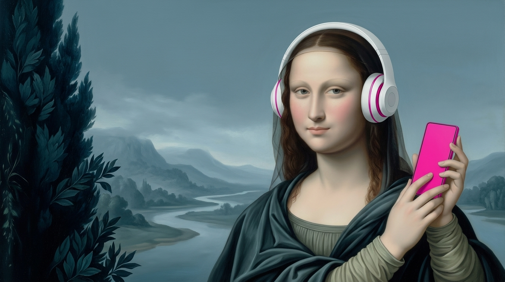

IIPlate 01 & Plate 02 · Cold Northern Light
Stillness


IIISingle-Act Original
Colophon
This standalone Florentine Loggia study shares the exact V3.3 offline token system, localized fonts, and five-plane perspective engine as the Two-Act Orbit showcase.